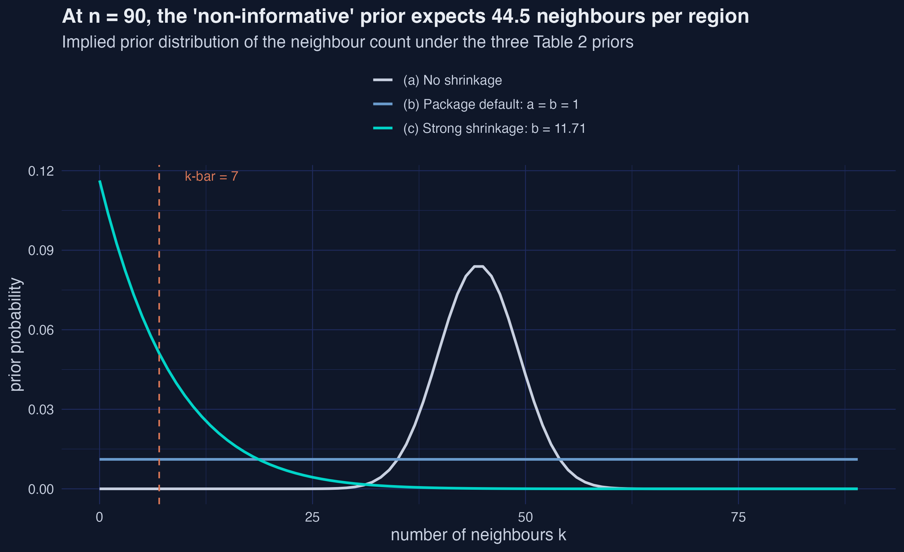
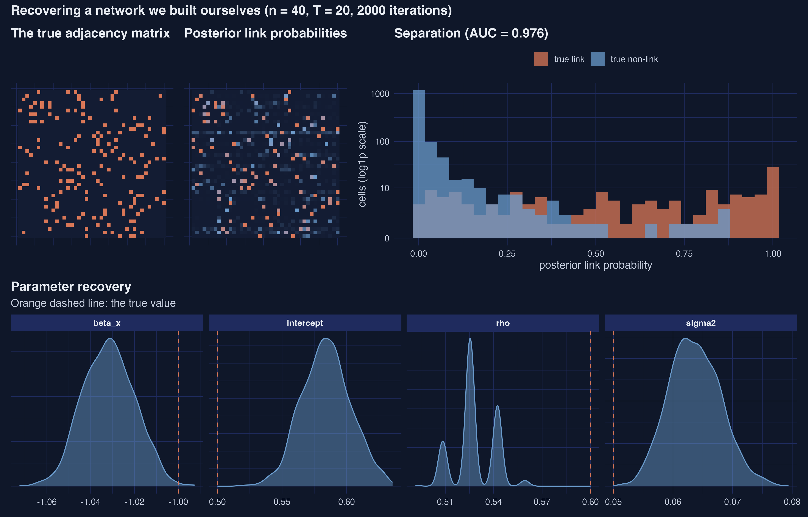
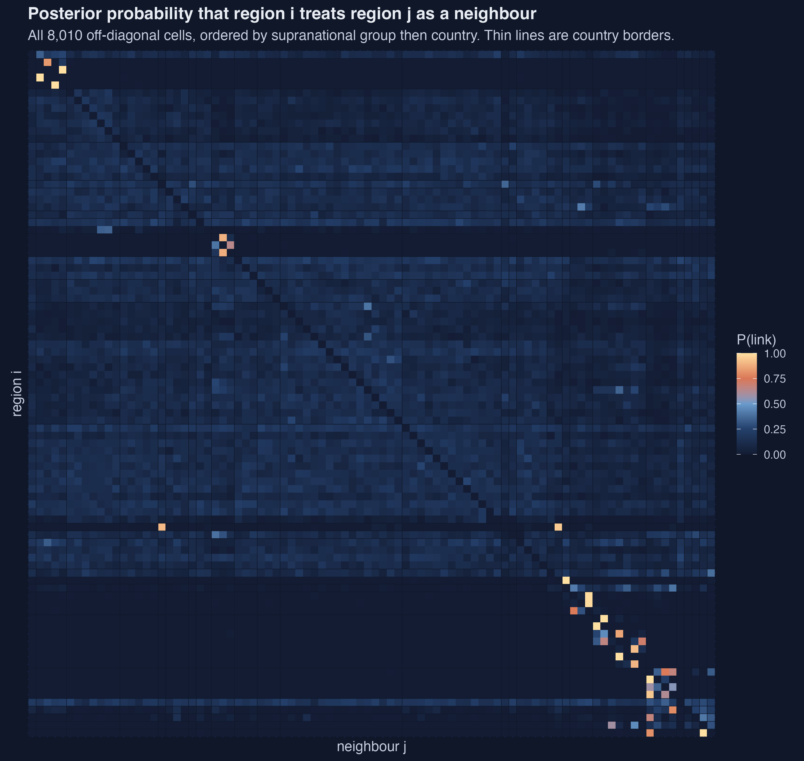
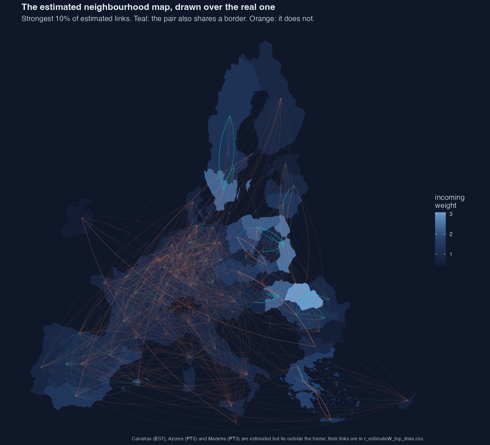

Bayesian estimation of spatial weight matrices — and what changes when you stop assuming
Nagoya University (GSID)
July 31, 2026
You have the full transcript of a conference dinner: who laughed at which joke, who fell silent when.
You do not have the seating chart.
Spatial econometrics hands you the chart first — drawn from shared borders or straight-line distance — and asks you to trust it.
\[y_t = \rho W y_t + Z_{t-1}\beta + \varepsilon_t\]
If the map is wrong, every number downstream is wrong.
Ten of ninety European NUTS-1 regions have no queen-contiguity neighbour at all:
Cyprus · Malta · Aegean islands · Canarias · Åland · Corse · Sicily & Sardinia · Azores · Madeira · Ireland
Each must be patched by hand before a contiguity model will even run — and those patches are invisible in the results table.
| Assumed \(W\) | Estimated \(W\) | |
|---|---|---|
| \(\rho\), \(\sigma^2\) | 2 | 2 |
| Slopes | 4 | 4 |
| Off-diagonal cells | 0 | 8,010 |
| Total unknowns | 6 | 8,016 |
| Observations | 1,710 | 1,710 |
| Obs per unknown | 285 | 0.21 |
4.7 parameters per observation. The likelihood alone cannot do this.
\[\underline{p}_{ij} \propto \underline{\omega}_{ij}\,\underline{m}(k_i)\]
Where links can be × how many there are.
The trap: a “non-informative” flat prior on the neighbour count implies an expectation of 44.5 neighbours per region — every region wired to half of Europe.

A link is on or off, so conditional on everything else there are only two states to score:
\[p(\omega_{ij} \mid \Omega_{-ij}, \cdot, \mathcal{D}) \sim \text{Bernoulli}\left(\frac{\bar{p}^{(1)}_{ij}}{\bar{p}^{(0)}_{ij} + \bar{p}^{(1)}_{ij}}\right)\]
Score both, normalise, flip a weighted coin. Repeat 8,010 times per sweep.
Sherman-Morrison rank-one updates make each flip cheap instead of an \(O(n^3)\) determinant.

AUC 0.976 · 95.3% of 1,560 cells classified correctly
| True | Estimate | 95% interval | Covered? | |
|---|---|---|---|---|
| \(\rho\) | 0.600 | 0.528 | [0.509, 0.542] | no |
| \(\sigma^2\) | 0.050 | 0.064 | [0.056, 0.073] | no |
| slope | −1.000 | −1.032 | [−1.053, −1.009] | no |
Sparsity biases the network sparse, and \(\rho\) down with it. Autocorrelation narrows the intervals.
Trust the structure. Hedge the intervals.
| Quantity | Paper | Ours | Verdict |
|---|---|---|---|
| \(\rho\) | 0.71322 | 0.71322 | exact |
| log initial GVA | −0.01692 | −0.016922 | exact |
| share high education | 0.00044 | 0.000441 | exact |
| av. indirect, initial GVA | −0.03972 | −0.039723 | exact |
12 of 12 quantities exact to the five decimals printed — same seed, same package version, same RNG, same BLAS.

Regions place 35.6% of their neighbourhood weight on compatriots — chance would give 7.1%.
Nothing in the specification mentions countries.
| Comparator | AUC | Share of top links |
|---|---|---|
| Same country | 0.753 | 30.2% |
| Queen contiguity | 0.698 | 17.2% |
| 7-nearest neighbours | 0.631 | 23.9% |
Strongest estimated links average 921 km, against 1,331 km for a random pair — geography still matters, just far less than nationality.

Teal = the pair also shares a border. Orange = it does not.
| Estimated | Queen | 7-NN | |
|---|---|---|---|
| \(\rho\) | 0.713 | 0.607 | 0.719 |
| High education, total | 0.00153 | 0.00066 | 0.00074 |
| Indirect ÷ direct | 2.11 | 1.20 | 2.20 |
Every sign survives. Every magnitude moves.
The data-chosen map more than doubles the total education effect.
A region raising tertiary attainment generates roughly twice as much growth outside its borders as inside them.
Whoever funds the universities captures about a third of the return.
Under contiguity that ratio is 1.20, not 2.11 — the difference between “most of the return leaks away” and “about half does”.
Different co-funding decision.
A posterior probability of 1.0 on Bulgaria → Czechia means residual co-movement is better explained with that link than without it, given a prior expecting seven neighbours.
It does not mean trade, commuting, or FDI.
With \(T = 19\), genuine transmission and shared exposure to common shocks are indistinguishable.
Every spatial result you have read is conditional on a neighbourhood map somebody chose before the analysis began.
It does not have to be.
Full tutorial, code and replication bundle: https://carlos-mendez.org/post/r_estimatew/